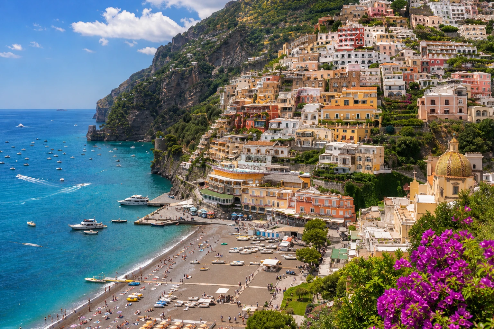
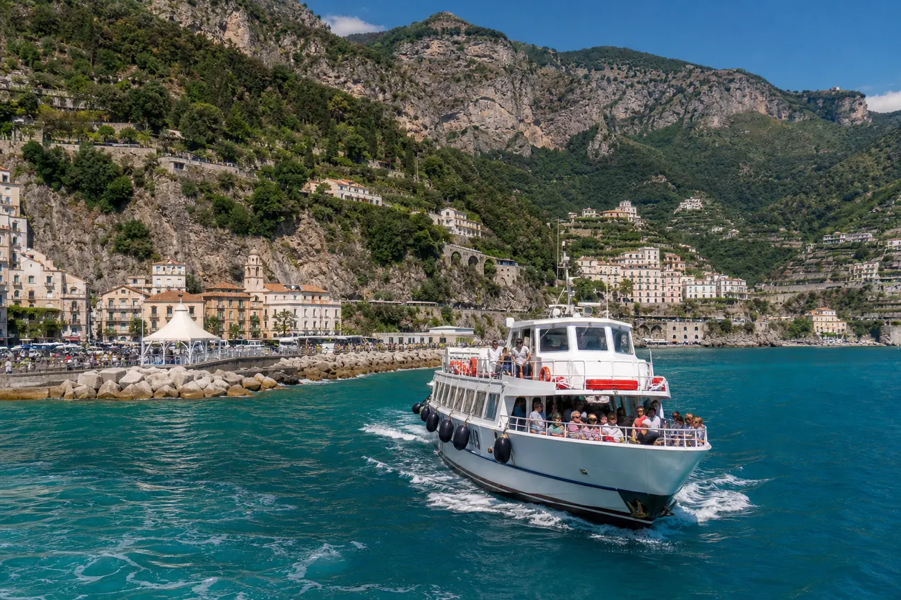
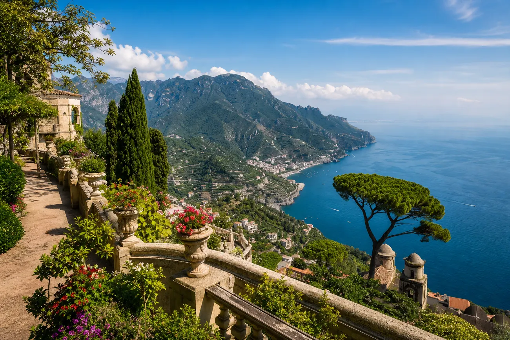
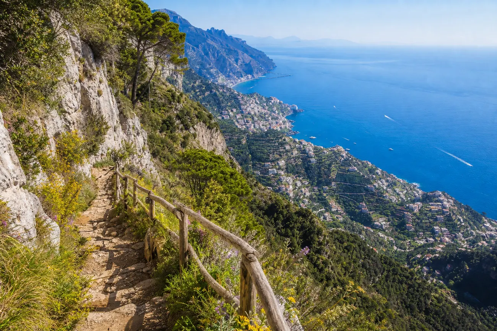

Ako cestovateľský sprievodca sa na tento región nepozerám len cez krásne výhľady, farebné domčeky a tyrkysové more. Pozerám sa aj na to, ako sa tam reálne dostať, kde sa oplatí bývať, kedy radšej nebrať auto a ako si výlet užiť bez naháňania sa po preplnených serpentínach.
Región medzi Neapolom, Sorrentom, Amalfi a Salernom patrí medzi najkrajšie kúty južného Talianska. Na malej ploche sa tu stretáva more, hory, úzke cesty, historické mestečká, citrónové terasy, trajekty, autobusy, schody a výhľady, pri ktorých človek veľmi rýchlo pochopí, prečo je Amalfské pobrežie zapísané v UNESCO.
Lenže práve táto krása má jednu daň: doprava tu nie je vždy jednoduchá.
Kde vlastne začína Amalfské pobrežie?
Amalfské pobrežie, po taliansky Costiera Amalfitana, leží na južnej strane Sorrentského polostrova v provincii Salerno. Nie je to len jedna cesta popri mori, ale celý dramatický pás pobrežia, kde sa pohorie Lattari prudko zvažuje do Tyrhénskeho mora.
Práve preto tu mestá nerastú do šírky, ale do výšky. Domy sú prilepené na svahoch, uličky sú úzke, schody sú všade a parkovacích miest je málo. To, čo na fotke vyzerá romanticky, môže byť s kufrom v ruke celkom slušná rozcvička.
Najznámejšie miesta
Positano je ikonické mestečko na svahu, známe farebnými domami, butikmi, výhľadmi a tmavou kamienkovou plážou.
Amalfi je historické centrum pobrežia a dôležitý dopravný uzol. Odtiaľto sa dá dobre pokračovať autobusom alebo loďou.
Ravello je pokojnejšie miesto vysoko nad morom, ideálne na výhľady, záhrady a pomalšie tempo.
Maiori a Minori sú praktickejšie mestečká s lepšími plážami a často aj príjemnejšími cenami.
Atrani je malé, kompaktné a autentické mestečko hneď pri Amalfi.
Vietri sul Mare je vstupná brána k pobrežiu zo strany Salerna, známa keramikou.

Najväčšia chyba? Myslieť si, že auto všetko vyrieši
Na mnohých dovolenkách je auto sloboda. Na Amalfskom pobreží môže byť auto skôr problém.
Cesta SS163 patrí medzi najkrajšie pobrežné cesty v Európe, ale zároveň je úzka, kľukatá a v sezóne veľmi vyťažená. Autobusy sa na serpentínach vyhýbajú len tak-tak, skútre sa prepletajú pomedzi autá a parkovanie v mestách ako Positano alebo Amalfi môže byť drahé, plné alebo oboje naraz.
Preto by som auto odporúčala len vtedy, ak:
- bývaš mimo hlavných turistických miest,
- máš zabezpečené parkovanie,
- cestuješ mimo hlavnej sezóny,
- alebo chceš preskúmať vnútrozemie, nie každý deň chodiť do Positana.
Ak chceš vidieť hlavné mestá Amalfského pobrežia, často je lepšia kombinácia vlak + trajekt + autobus.
Najlepšie vstupné body: Neapol, Salerno alebo nové letisko QSR
Neapol
Neapol je veľký vstupný bod do celého regiónu. Má letisko, vlakovú stanicu Napoli Centrale a dobré spojenia smerom na Sorrento, Pompeje aj Salerno.
Ak chceš ísť cez Sorrento a potom na Positano, môžeš využiť vlak smerom na Sorrento a následne autobus alebo trajekt. Táto trasa dáva zmysel hlavne vtedy, ak chceš spojiť Neapol, Pompeje, Sorrento a západnú časť Amalfského pobrežia.
Salerno
Salerno je podľa mňa jeden z najpraktickejších základných bodov pre rozumného cestovateľa. Nie je také slávne ako Positano, ale logisticky dáva veľký zmysel.
Zo Salerna sa dá:
- ísť vlakom do Neapola alebo Ríma,
- nastúpiť na autobus smer Amalfi,
- využiť trajekty smerom na Amalfi a Positano,
- bývať často lacnejšie ako priamo v najznámejších mestečkách.
Ak chceš mať menej stresu a lepšiu dostupnosť, Salerno je veľmi dobrá voľba.
Letisko Salerno Costa d'Amalfi
Letisko Salerno Costa d'Amalfi je nová možnosť pre cestovateľov, ktorí chcú priletieť bližšie k východnej časti pobrežia. Netreba ho však brať ako zázračné riešenie všetkého. Stále si treba dobre overiť letový poriadok a dopravu z letiska.
Najbezpečnejšia logika je jednoduchá: z letiska sa dostať do Salerna a odtiaľ pokračovať autobusom, trajektom alebo súkromným transferom podľa sezóny, času príletu a miesta ubytovania.
Ako sa pohybovať po pobreží
Autobusy SITA Sud
Autobusy sú lacnejšia možnosť, ale v sezóne treba rátať s čakaním, plnými spojmi a meškaniami. Základná logika je takáto:
Salerno - Amalfi
Túto časť pokrýva linka cez Vietri sul Mare, Cetaru, Maiori a Minori.
Amalfi - Positano - Sorrento
Túto časť pokrýva druhá hlavná pobrežná linka.
Dôležité: ak chceš ísť zo Salerna do Positana autobusom, často budeš prestupovať v Amalfi. Preto si nenechávaj prestup na poslednú chvíľu, hlavne ak pokračuješ na vlak alebo letisko.
Lístky si kupuj dopredu. Ideálne v tabacchi, bare, novinovom stánku alebo cez aplikáciu, ak ti funguje. Nespoliehaj sa na to, že lístok kúpiš priamo v autobuse.
Trajekty
Ak idú trajekty, často sú najkrajším a najpríjemnejším spôsobom dopravy. More ti otvorí úplne iný pohľad na pobrežie. Zrazu nevidíš len cesty a zákruty, ale celé svahy, mestá nalepené na skalách a malé pláže ukryté pod útesmi.
Trajekty sú výborné najmä na trase Salerno - Amalfi - Positano. Treba však myslieť na sezónnosť. Mimo hlavnej sezóny alebo pri zlom počasí môžu byť spoje obmedzené.

Vlaky
Vlak neprechádza priamo po Amalfskom pobreží, ale je výborný na presuny medzi väčšími uzlami.
Rím - Salerno je pohodlná vysokorýchlostná trasa. Neapol - Salerno je krátky a praktický presun. Neapol - Pompeje - Sorrento zase dáva zmysel, ak chceš navštíviť Pompeje alebo ísť na západnú stranu pobrežia.
Kde sa oplatí bývať?
Ak chceš romantiku a ikonické výhľady, vyber si Positano. Len rátaj s vyššími cenami, množstvom schodov a väčším počtom turistov.
Ak chceš dobrú logistiku, vyber si Amalfi. Je to výborný prestupný bod, ale v sezóne rušný.
Ak chceš pokoj a výhľady, vyber si Ravello. Nie je priamo pri mori, ale atmosféra je úplne iná - pomalšia, elegantnejšia, menej chaotická.
Ak chceš rozumný kompromis, pozri sa na Maiori, Minori alebo Atrani. Sú praktickejšie, často dostupnejšie a stále krásne.
Ak chceš lacnejšiu základňu s výbornou dopravou, veľmi silná voľba je Salerno.

Cesta bohov: nádhera, ale nie pre každého
Sentiero degli Dei, teda Cesta bohov, patrí medzi najkrajšie turistické trasy v tejto oblasti. Klasická trasa začína v Bomerane pri Agerole a vedie do Nocelle nad Positanom.
Výhľady sú úžasné. More je hlboko pod tebou, svahy padajú do diaľky a pri dobrom počasí máš pocit, že kráčaš po okraji sveta.
Ale pozor: nie je to obyčajná prechádzka v sandáloch. Treba pevnú obuv, vodu, ochranu pred slnkom a reálny odhad kondície. Ak pokračuješ z Nocelle pešo do Positana, čaká ťa dlhý zostup po schodoch. Pre niekoho romantika, pre kolená niekedy menšia katastrofa.
Ak si nie si istý kondíciou, pokojne si naplánuj kratšiu verziu alebo si dopredu over autobus z Nocelle.

Malé praktické tipy, ktoré ti zachránia nervy
- Kupuj si autobusové lístky vopred. Nie jeden na doraz, ale radšej aj do zásoby.
- Ráno vyraz skôr. Na Amalfskom pobreží platí, že kto sa rozhýbe pred davom, má krajší deň.
- Nespoliehaj sa na presné časy autobusov, ak potrebuješ stihnúť vlak alebo lietadlo.
- Ak ideš autobusom zo Salerna smerom na Amalfi, sadni si na stranu s výhľadom na more. Cesta je sama o sebe zážitok.
- Do Positana nechoď s predstavou, že všade prídeš autom až ku vchodu. Toto je mesto schodov.
- Ak cestuješ v lete, vždy maj vodu, klobúk alebo šiltovku a časovú rezervu.
- Ak ideš mimo sezóny, over trajekty. More je krásne, ale cestovný poriadok nie je celoročný v rovnakom rozsahu.
Jednoduchý itinerár na 3 dni
Deň 1: Salerno - Amalfi - Atrani
Začni v Salerne a presuň sa trajektom alebo autobusom do Amalfi. Pozri si katedrálu, uličky, papierenskú tradíciu a potom sa pešo presuň do Atrani. Je to krátky presun, ale atmosféra je pokojnejšia ako v samotnom Amalfi.
Deň 2: Positano a výhľady z mora
Ak premávajú trajekty, choď do Positana loďou. Je to krajší zážitok ako prísť po ceste. V Positane sa priprav na schody, drahšie podniky a veľa ľudí, ale aj na výhľady, ktoré naozaj stoja za to.
Deň 3: Ravello alebo Cesta bohov
Ak chceš pokojnejší deň, vyber si Ravello. Vysoká poloha nad morom, záhrady a výhľady sú ideálne po rušnom Positane.
Ak chceš aktívny deň, naplánuj Cestu bohov. Len to neber ako spontánnu prechádzku po obede. Začni skoro, vezmi vodu a priprav si návrat.
Moje odporúčanie
Amalfské pobrežie nie je miesto, kde sa oplatí naháňať desať zastávok za jeden deň. Je to región, ktorý si pýta pomalší rytmus, dobrú logistiku a ochotu nechať auto oddychovať.
Najlepšia stratégia je vybrať si dobrú základňu, kombinovať trajekty s autobusmi a nesnažiť sa vidieť všetko naraz. Positano je krásne, ale nie je celé pobrežie. Amalfi je praktické, ale rušné. Ravello je pokojné, ale mimo mora. Salerno možno nie je také fotogenické ako Positano, no pre cestovateľa, ktorý chce mať veci pod kontrolou, je veľmi rozumné.
Ak si tento región dobre naplánuješ, dostaneš z neho presne to, čo sľubujú fotky: more, skaly, citróny, vôňu juhu, výhľady a pocit, že Taliansko tu ide naplno.
Len mu daj čas. A nekaz si ho autom tam, kde lepšie funguje loď.